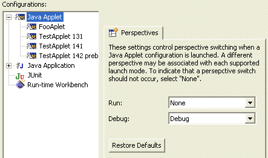

Item title, right justified, in bold, with no trailing punctuation
Blurb.
If a small image sheds light, place it below the description, in a separate paragraph. Screen snapshots should be done at 1152x864 resolution on Windows XP with default theme, default fonts, and default font size. Crop out any extraneous stuff to focus the reader's attention on your new feature. The image should be no more than 466 pixels wide and in GIF format (not TIF, not BMP, not JPG) with an exact palette (not web) so as to properly capture the gradient shading in the borders. Name the file is a way that is appropriate and specific to the item (e.g., key-bindings.gif, rather than something generic like image.gif).
Switching perspective on launch
You can now control which perspective gets opened when a program is launched. These setting are available on the launch dialog when a launch configuration type is selected.

Run Ant in a separate JVM
Environment variables for external program

Working sets for external tool builders

Disabling breakpoints
The Breakpoints view now has checkboxes for quickly disabling and re-enabling breakpoints:

Project builders can be disabled and re-enabled via checkboxes on the Builders project property page.